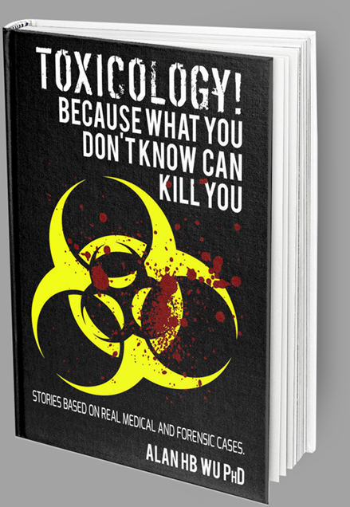

TOXICOLOGY!
Because what you don't know can kill you.
We all wish we had more power. The power to turn back time, to re-write history and make better decisions, but most importantly, the power to save a life. It may appear that we are on our own to battle uncertain destiny. But what if I were to tell you there's more?
There's a way to change your fate, to hold more cards, and take not only your own life, but the lives of those you love into your hands. No, we cannot go back in time, but we can set forth ripples of change into the future that can alter our coexistence forever. Toxicology and clinical laboratory testing may be one of those portals.
BUY IT NOW
Available From

CHAPTER SUMMARIES
TOXICOLOGY Because What You Don't Know Can Kill You is a collection of short stories based on real medical and forensic cases. Below you'll find brief summaries explaining each story.
-
Max's Quiet-a-Time
A nursing home resident is accidently overdosed with quietipine, an anti-psychotic medication. While the postmortem blood level of the medication is high, the autopsy pathologist discounts the results because of “postmortem redistribution” and rules that the death was due to old age. When a person dies, there is a leakage of drugs from the organs that falsely creates higher drug levels after death. The daughter of the deceased suspects foul play, because his nursing home medication records mysteriously vanish.
-
Second Chance
After decades of living an irresponsible life with recreational drugs, a woman stops abusing drugs and lives a meaningful life. Unfortunately, before she gives up her reckless lifestyle, she contracts a chronic hepatitis C infection and now needs a life-saving liver transplant. She is denied this operation because her urine drug test comes up positive for methamphetamine use which she now denies. We attend a medical convention and learn new information that can save her.
-
Blood Beer Making
An alcohol-intoxicated man causes a traffic accident that kills his childhood friend who was a passenger in his car. The driver is charged with vehicular manslaughter. The crime lab tests his blood for alcohol 3 days after his arrest. His clever defense attorney argues that alcohol was produced in his body by fermentation while it sat at room temperature in the lab. There is no other alcohol testing conducted to refute this claim. But is there other objective evidence that can be used to determine the truth?
-
Urine Luck
A scientist works in my workplace drug testing lab. We conduct drug tests for employees in “safety-sensitive” occupations. The analyst suspects that one of the anonymous donors that we regularly test is secretly adulterating his urine sample to invalidate our lab test in order to mask his drug use. My technologist becomes obsessed with catching this donor and steps beyond the boundaries of his legal and moral responsibilities.
-
Sloe Gin
A doctor admits to drinking wine the day before she arrives for work. She is subjected a breath alcohol test. The result suggests that she was drinking that morning. She tells the medical licensing board that she is a slow alcohol metabolizer and contracts my laboratory to prove it. Following controlled and witness drinking, we measure her alcohol breakdown rate and confirm her unusual metabolism. She is exonerated by the board. We realize later that she may have cheated.
-
Country Doctor
An elderly physician practices in a small agricultural town. He is involved with the care of a 2-year old child who is seen in the hospital. He prescribes a cold medication and discharges the child to his parents. A few days later, the boy develops a high fever and he dies at home. How did this child die?
-
No Snack for Yew
A mother's last child is mentally challenged. When the woman dies, the husband remarries and the step mother sends the boy to a home for developmentally disabled children. A few months later, he is found dead in the courtyard of the home. Just before he dies, he is seen eating leaves and berries from a flowering shrub in the backyard. What was the boy eating that caused his death?
-
Dumbing It Down
A boy with a photographic memory and is brilliant in school is involved with a traffic accident which causes the death of his parents die. He suffers persistent migraine headaches. The medication he is taking causes him to lose concentration, memory and even speech. Was this due to his traumatic experience?
-
Stuffers and Packers
A drug smuggler arrives at the international airport with his girlfriend. The man swallows dozens of small plastic containers of cocaine that were carefully packed to prevent leakage while in his body. However, he forgets to pack his recreational stash of cocaine and is fearful that the drug-sniffing dogs will detect his hidden supply. His tells his girlfriend to swallow a condom stuffed with the coke. She has a heart attack and recovers from the event but then dies unexpectedly.
-
Early Wakeup Call
A young doctor is in his third year of residency in anesthesiology. During an open heart surgery procedure, he administers half the normal dosage to of fentanyl, a drug used to induce anesthesia. He is suspected of diverting some of the fentanyl for his own recreational drug use. My lab is challenged to find a way to catch him.
-
The Spice of Dyslife
An actor is preparing for an audition and is very anxious. His agent gives the actor cookies laced with an unknown drug in hope of calming him down but instead, it causes him to hallucinate. After the agent leaves, the actor phones his roommate and explains to him that he wants to jump out of the window and fly away.
-
Rave Review
A group of teenage girls attend a music festival. These festivals are also attended by drug dealers wishing to score big by selling to the eager youth. One dealer in particular is offering Ecstasy pills for free. All of the girls try it but one becomes seriously ill and dies. What were they taking and why did she die?
-
Pooper Scooper
A sailor finds love in an overseas brothel and marries her upon his retirement. Now in the US, the wife becomes pregnant and delivers a small but otherwise healthy baby. The child's first poop was sent for toxicology testing. When the result comes out positive for cocaine, the child welfare department convenes and rules that the mother is unfit. The child is removed from the custody of his parents. The parents deny any drug use and need help from us.
-
Pressor Luck
A nurse murders several hospitalized patients with adrenaline overdoses. The hospital suspects foul play because more than a normal amount of fatalities occur while this nurse is on duty. The DA orders the victims exhumed and tested for evidence of injections. As adrenaline is a natural compound, its presence is insufficient to verify poisonings. My lab performs research studies on animal models in hopes of proving her guilt.
-
The Vacationist Rapist
A teenage boy from an affluent family is accused of raping a girl. He is arraigned, but flees the jurisdiction prior to trial, and lives in Europe as a fugitive for a decade. Authorities find and extradite him to the US, where he is tried for rape. The defense collects blood from the vehicle's rug and the victim's undergarments and concludes that the victim is taking drugs at the time of the encounter. Is it rape or consensual sex?
-
Mushroom Rage
A boxer has an explosive encounter with his trainer weeks before a fight. The trainer introduces his client to a home-brewed concoction. The two are also high on methamphetamine. After they drink the beverage, the fighter suddenly becomes enraged and attacks the partner. He kills the trainer with his bare hands, and then proceeds to mutilate his lifeless body. Just what was in that beverage?
-
Slide Toxin
An arriving international flight missed the runway and its tail crashes onto the tarmac. After the plane comes to rest, the doors are opened and the passengers are instructed to evacuate though emergency slides. One evacuation chute deploys inside the plane trapping a passenger underneath. When the unconscious victim is discovered, the slide was sliced open exposing him to the chemicals inside the bag used for its inflation. Could this have caused his illness?
-
Hospital Daycare
A young mother attends my toxicology lecture and learns about poisons. She suffers from “Munchausen Syndrome by Proxy,” a psychiatric disease whereby a mother causes harm to her kids. She uses information from a toxicology class that I teach to poison her son. She is tried and convicted of child endangerment and incarcerated. During one of the conjugal visits, she becomes impregnated by her husband and delivers a second child suffering from the same symptoms as her son. Was there a lab mistake made that resulted in her incarceration?
-
Duffer Dysfunction
An aging pro-golfer finds success on the Senior PGA tour. An adoring female fan invites him to her hotel room after the first round of a tournament. Not wanting to disappoint her, he takes a double dose of an herbal medication marketed for erectile dysfunction (ED). After intercourse, the couple falls asleep in bed together. In the morning, the woman screams in horror to find that the golfer is lying dead next to her.
-
Toadstool Gourmand
A Taiwanese grandmother picks poisonous mushrooms in California because they are identical in appearance to edible versions back home. She prepares the mushrooms for dinner one night. Shortly thereafter, she and her grandson both become violently ill. A liver specialist is consulted who knows of experimental treatment for mushroom poisonings. As this medication is not approved for use in the US, he places an emergency call to the FDA, and gets permission to have this medication flown from Germany overnight.
-
Jacked!
A young soldier is a body builder and spends much of his free time in the gym lifting weights with his fellow recruits. The group ingests a supplement purchased from the Marine Corps store that will assist in their training. After a few months of ingesting this supplement, the young man suddenly dies of a heart attack. Such deaths are highly unusual for young individuals who are active and physically fit.